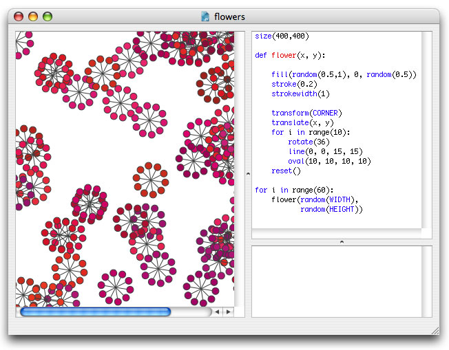
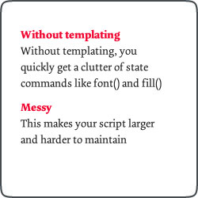
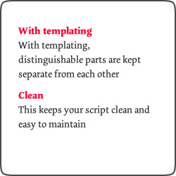

Commands
Aside from the predefined commands in the NodeBox reference you can also define your own custom commands. Creating a command is a design strategy in which you re-use certain actions or pieces of your script.

For example, in the above example all the actions to draw a flower (ten red-pinkish ovals connected by lines) are grouped in a handy flower() command. This command can then be called one time, a hundred times, or a thousand times. We only need to define the actions to draw a flower once. If we want to modify the way a flower is drawn, we only need to modify the code at one location.
Defining your own commands is like composing your own toolbox, with a set of tools that you can apply to your creations over and over.
Command definition
As a simple example I've defined my own header() command below:
def header(txt, x, y): fill(1, 0, 0) font("Dolly-Bold", 18) text(txt, x, y)
The definition of a command starts with def, followed by the name of the command (pick a relevant name), and a list of parameters. Don't forget the colon at the end of the line - this tells NodeBox that the intented statements below are what the command does.
Naming conventions:
- Use a simple and relevant word that describes what the command does.
- Use lower_case_with_underscores (except for essential commands like imagesize).
- Commands that return True or False start with is: is_white, is_alive, is_big, ...
- Commands that change and return a value use a verb: adjust_contrast, strip_tags, ...
Parameters
Command definitions are not executed by themselves: you are instead teaching NodeBox something, for example, what a header is. Command definitions need to be called from somewhere else in the script. This is where parameters come in: notice how the definition of header() uses a txt, a x, and a y parameter. Theses are used like variables inside the definition. Once the command is called, you supply real values for txt, x and y.
header("Templating", 20, 40)
NodeBox would now execute all of the code in the header() definition, with txt being "Templating", x being 20, and y being 40.
Return value
You may have noticed that some commands in NodeBox have a return value that you can store in a variable. For example, textheight(txt, w) returns the height of a paragraph displaying txt with a width of w.
def paragraph(txt, x, y, w): fill(0.2) font("Dolly-Roman", 14) text(txt, x, y, w) return textheight(txt, w)
The return statement inside a definition returns a value. This can be any number of things, a number, a string, a list. The return statement always comes last inside the definition.
Example
In the example below, we put two identical scripts next to each other, one using plain top-to-bottom scripting and one using templates. The first script is in fact less code, but imagine it would draw not two but twenty paragraphs... then you would have to define fonts and colors over and over again, and probably end up feeling like a robot trying to explain something to another robot.
Moreover, changing the header color or the horizontal margin is much easier in the second script because we have to do it only once: by changing the code in the header() definition or by changing the value of the x variable.
|  The script with plain top-to-bottom scripting. Notice its repetitiveness. |  The same script with templates. |
fill(1, 0, 0.25) font("Dolly-Bold", 14) txt = "Without templating" text(txt, 20, 30, 200) fill(0.2) font("Dolly-Roman", 14) txt = "Without templating, ..." text(txt, 20, 50, 200) fill(1, 0, 0.25) font("Dolly-Bold", 14) txt = "Messy" text(txt, 20, 120, 200) fill(0.2) font("Dolly-Roman", 14) txt = "This makes your script...." text(txt, 20, 140, 200) | def header(txt, x, y): fill(1, 0, 0.25) font("Dolly-Bold", 14) text(txt, x, y, outline=True) return textheight(txt) def paragraph(txt, x, y, w): fill(0.2) font("Dolly-Roman", 14) text(txt, x, y, w, outline=True) return textheight(txt, w) x = 20 y = 30 w = 200 y += header("With templating", x, y) txt = "With templating, ..." y += paragraph(txt, x, y, w) + 10 y += header("Clean", x, y) txt = "This keeps your script..." paragraph(txt, x, y, w) |